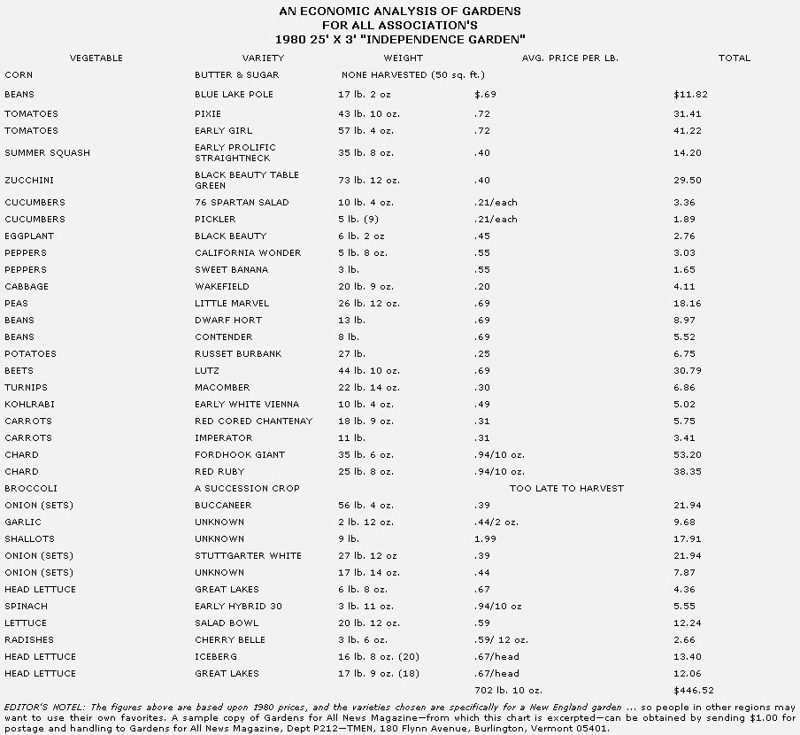

It would be completely understandable if, seeing the title above, you experienced a sudden and severe attack of skepticism. However, contrary to what you might reasonably expect, the admittedly extravagant promise implied in our headline has already been fulfilled, and at no cost ... because most of us have- right now -considerable wealth within our easy reach. And despite the fact that the world and national political and economic situations could hardly be more threatening and uncertain, this might be a good time to take a look at the real "bottom line" that affects us all ... and perhaps, to admit that things aren't actually all bad.
Consider the following, Real material wealth, as opposed to cash, can pretty accurately be said to consist of shelter, fuel, and food. (After all, even gold-the "universal currency"-is worthless in the hands of a person who's in need of one of those three commodities and can't find anyone willing to exchange the yellow metal for it.)
And as a result of nothing more-or less-than the turning of the seasons, we're now blessed with nature's annual offer of a chance to make a new beginning ... because spring itself provides us with material security for today and with the opportunity to build wealth that can help us prepare for the future.
In most parts of North America, free-for-the-gathering wild foods are now available in abundance. (In fact, we believe that if it weren't for the danger of contamination caused by automobile exhaust, it would be possible to feed MOTHER's entire editorial staff simply by foraging along the unkempt borders of the magazine office's gravel parking lot.) So, to the person with either good plant identification skills or a reliable wild-foods field guide, spring does provide instant material security ... in the form of a supermarket, that extends as far as he or she is willing to travel in the course of collecting a meal.
And what about the chance to accumulate wealth that we mentioned above? Well, it'd be difficult to imagine any activity that has more to do with the creation of real wealth than gardening ... which allows us to use our own skills and energies to participate in the transformation of sunlight (among other, things, of course) into food! There an no layoffs to threaten a home gardener, no fears of reduced work hours or mandatory cuts in salary . . because he or she will, always, God and nature willing, be rewarded in direct proportion to the quality of the job done (and that reward can be quite a substantial one, as the accompanying chart demonstrates).
Of course, men and women have need of more than food (although it could certainly be argued that the season's steadily warming days take care of a large portion of our immediate shelter and, fuel requirements, too), and it would be simplistic to suggest t hat anyone lessen the intensity of his or her attempts to prepare for an uncertain future just because we've entered another spring. (On the contrary, we would urge, as we always have in this column, that you act immediately and continually, taking whatever steps you can to guarantee your ability to provide for yourself and for your famfly if one, of the often predicted disasters-be it natural, political, or financial-should, indeed, strike.)
On the other hand, though, we suggest that you also take the time to work in the soil, and to appreciate the wonderful gifts that are our birthrights. After all, though we, sometimes seem to be trying to tear our roots from this earth-with our dependence upon processed food, air-fouling automobiles, and energy-gobbling appliances-it's good to remember that our planet remains ready and able to feed us... and that, in a real sense, nature-is fully capable of providing a human being with everything he or she really needs.
|
 |
|
|